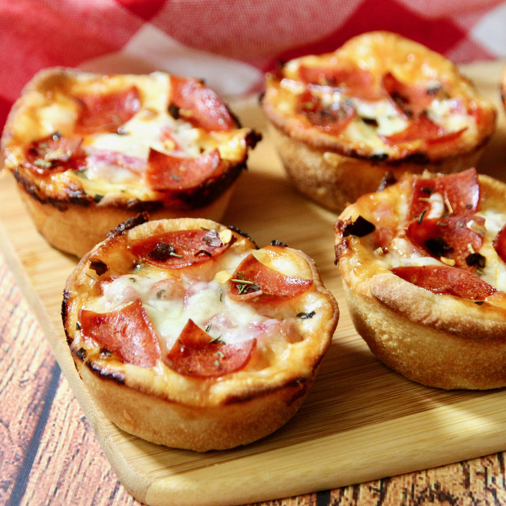

Pepperoni Pizza Muffins

Descrpition
These pizza muffins, these are super easy to make, and as delicious as a pizza
It can be a lovey appertizer, and kids love it. Pair it withb variety of different
toppings, you'll have several different pizzas on your table in no time.
Ingridients
- Cooking Spray
- 1(300 ml) can of refigerated buttermilk bicuit dough
- 10 tablespoons pizza sauce.
- 10 slices of pepperoni
- 10 tablespoons shredded mozarella cheese, or as needed
Directions
- Preheat the oven to 425 degrees F (220 degrees C). Spray 10 muffin cups
with cooking spray.
- Press biscuits, one at a time, between hands to flatten. Place each
flattened biscuit in a muffin cup; press into bottom and up sides of cup.
Set aside for dough to settle and slightly rise, about 5 minutes; lightly
press dough into cups if needed.
- Spoon 1 tablespoon pizza sauce into each dough cup; top each with 1 slice
pepperoni and 1 tablespoon mozzarella cheese.
- Bake in the preheated oven until pizza muffins are lightly browned and
cheese is melted, about 10 minutes. Remove from tin and place on a cooling
rack to cool slightly, about 5 minutes.